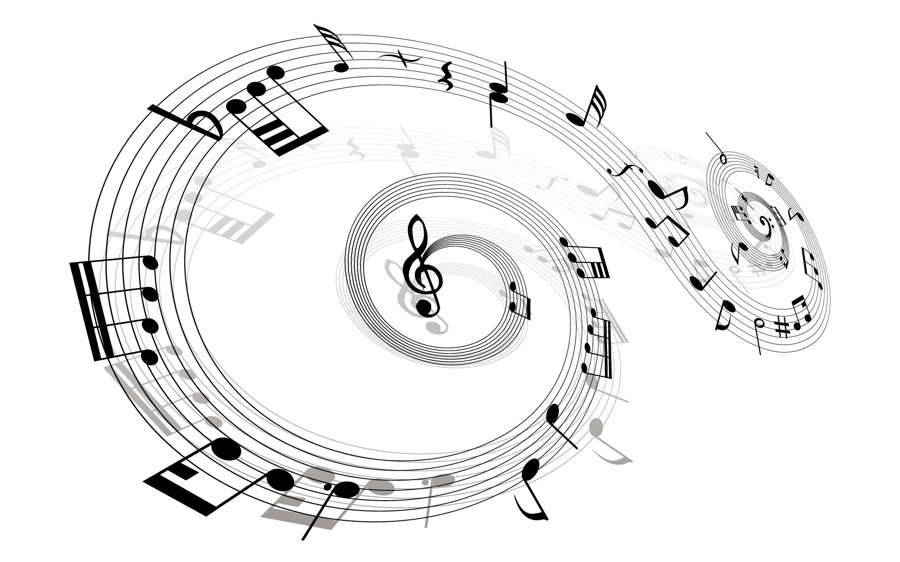

Stiluri muzicale si muzicieni celebrii
Statul. Asadar, acesta afirma ca atunci cand
modurile muzicii se schimba, legile de baza ale statului se schimba odata cu ele, punand in relatie muzica cu intregul mecanism de functionare specific cetatii. Astfel, muzica poate defini o natiune. 
Muzica clasica
Muzica culta, savanta sau (mult mai des intrebuintat) clasica cuprinde totalitatea realizarilor muzicale
proprii reprezentantilor culturii inalte intr-un spatiu geografic, de-a lungul unui interval însemnat de
timp (de ordinul secolelor, mileniilor). Elaborarea de muzici culte respecta un numar de precepte impuse
prin traditie. Astfel, autorul este cunoscut prin numele lui sau macar printr-un pseudonim si detine o
cunoastere temeinics a teoriei muzicale aplicate in cultura de care
apartine. Desi fundamentate pe traditie, muzicile culte sunt intotdeauna receptive la inovatie sub o
forma sau alta; in stadiile sale inaintate de evolutie, o muzica culta poate nega chiar si o parte din
legile sale fundamentale în scopul de a realiza noul. Astfel, supravietuirea unei muzici culte impune
pastrarea unei baze cat de restranse privitoare la practica creatiei si a interpretarii.
In mod obisnuit, prin sintagma muzica culta
este vizata muzica ecleziastica și de concert
dezvoltata in Europa vestica si apoi raspandita si în alte spatii geografice, cuprinzand aproximativ
intervalul ultimelor zece secole. Însă denumirea de muzică culta se aplica si în cazul altor manifestari
muzicale izolate de traditia vest-europeana, care in schimb respecta normele mai sus amintite ale
culturii inalte – spre exemplu, muzica culta indiana, cea otomana, cea japoneza.
Muzica culta a
trecut prim mai multe etape:
Renasterea (1400 - 1600)
Renasterea nu a fost o perioada importanta doar in evolutia picturii, stiintelor si descoperirilor
geografice, ci si o epoca in care muzica vocala s-a dezvoltat considerabil. Atunci a apărut muzica
vocala polifonica (interpretarea pe mai multe voci). Compozitiile muzicale au devenit mult mai complexe,
ajungandu-se sa se compuna partituri pentru coruri cu un număr impresionant de solisti. Genurile preferate
din acea perioadă erau messa, madrigalul (gen de obicei laic) si motetul. Perioada de apogeu a Renasterii
in muzica a fost secolul al 16-lea, numit si veacul de aur al polifoniei
, principalul reprezentant
fiind Giovanni Pierluigi da Palestrina (1525-1594).
Barocul (1600 - 1750)
Barocul (sau Preclasicismul) incepe odata cu nasterea genului de operă si se termina odata cu moartea celei mai
importante personalitati muzicale al acestui curent: Johann Sebastian Bach. Prima opera a fost compusă in 1595
de Jacopo Peri si s-a numit Dafne, insa s-a pierdut in intregime pana in zilele noastre. Alte prototipuri ale
genului dateaza din 1600 (tot de Jacopo Peri), respectiv din 1602 (de Julio Caccini) si poarta denumirea de
Euridice, din care s-au păstrat doar cateva fragmente. Cea mai veche creatie muzicala care poate fi oficial
încadrata în genul muzicii de operă a fost L' Orfeo
, compusă de Claudio Monteverdi, inspirată tot din
mitul lui Orfeu precum compozitiile precedente, dar cu o orchestrație mult mai bogata si cu un mic preludiu
care marcheaza deschiderea spectacolului. Principala tendința a perioadei a fost contopirea vocilor cu
instrumentele. Muzica este bogat ormanentată si pare să curga in flux continuu. Principalele
folosite in muzica baroca au fost orga, clavecinul (stramosul
pianului) si viola da gamba,
ca principale genuri muzicale avem fuga, concerto grosso, cantata, oratoriul si opera seria, iar ca
muzica de dans intalnim sarabanda, hornpipe, alemanda, menuet.
Romantismul (1827 - 1910)
La sfarșitul secolului al XVIII-lea, în Europa de Vest, apare o noua miscare in literatura, numită Romantism. La inceput de secol XIX aceasta miscare apare treptat si in muzica, insusi Beethoven fiind considerat de unii ca fiind primul compozitor romantic, avand in vedere ca multe dintre compozitiile sale marcheaza trecerea spre acest curent, existand si in zilele noastre controverse privind perioada din istoria muzicii europene in cadrul careia muzicianul se incadreaza. Insa, ca punct de reper, de multe ori se ia anul 1827 (care este si anul mortii lui Beethoven) pentru o delimitare aproximativa intre clasicismul si romantismul in muzica. Acest curent muzical se întinde pe o perioada de aproximativ un secol si reprezintă perioada de apogeu a muzicii culte din spatiul european. Romantismul muzical este opus clasicismului incorsetat de reguli, în care compozitorii trebuiau sa urmeze un tipar foarte strict si sa compuna piese cu formă fixa. In perioada romantismului muzical, accentul nu se mai pune pe reguli stricte de compozitie, ci pe transmiterea sentimentelor si trairilor prin intermediul muzicii, existand o mai mare libertate de expresie a muzicienilor prin intermediul acestei arte. Cativa reprezentanti ai romantismului timpuriu sunt Carl Maria von Weber, Franz Schubert, Niccolo Paganini, Gioacchino Rossini, Robert Schumann si Frederic Chopin .
Muzica Jazz
Jazz-ul s-a dovedit a fi foarte greu de definit, deoarece cuprinde o gama larga de muzica ce se intinde pe o perioada de 100 de ani, de la ragtime pana in prezent. Au fost facute încercari de a defini jazz-ul din perspectiva altor traditii muzicale, cum ar fi istoria muzicii europene sau muzica africana. Dar criticul Joachim-Ernst Berendt sustine ca termenii sai de referinta si definitia ei ar trebui să fie mai larga, definind jazz-ul ca o forma de arta muzicala care provine din Statele Unite ale Americii, prin confruntarea negrilor cu muzica europeana si argumentand ca aceasta difera de muzica Europeana in care jazz-ul are o relatie speciala in timp definita ca fiind 'swing', implică o spontaneitate si vitalitate de productie muzicala in care improvizatia joaca un rol si contine o sonoritate si maniera de frazare care reflecta individualitatea performantei muzicianului de jazz. O definitie mai larga care cuprinde toate diferitele epoci de jazz a fost propusa de Travis Jackson: aceasta este muzica care include calităti cum ar fi swing, improvizatii, dezvoltatea unei voci individuale, si fiind deschis la diferite posibilităti muzicale. Krin Gibbard a oferit o imagine de ansmblu a discutiei privind definitiile, argumentand ca jazz-ul este un construct care, in timp ce artificial inca mai este util sa desemneze un numar de muzici cu suficiente in comun sa fie intelese ca parte a unei traditii coerente Spre deosebire de eforturile depuse de comentatori si entuziasti ai anumitor tipuri de jazz, care au sustinut definitii mai restranse ce exclud alte tipuri, muzicienii insisi sunt adesea reticenti in a defini muzica pe care o canta. Duke Ellington, una dintre figurile cele mai faimoase a jazz-ului, a declarat: totul e muzica.
Origini ale Jazzului
Jazzul isi are originea in amestecul diverselor traditii muzicale ale sclavilor negri proveniti din Africa.
Din traditia africana deriva stiluri de interpretare care lasa cantaretului un spatiu larg de executie si
libertate de improvizare, cu o schema Intrebare si răspuns
(Call-and-Response) pe un fond ritmic complex,
ce duce la sincoparea melodiilor executate de diverse instrumente. Alte surse ale jazzului sunt constituite
de cantecele rurale ale culegatorilor de bumbac, in stil blues, cantecele de leagan si cele religioase
(negro spirituals, apoi gospel songs). La acestea s-au adaugat si elemente ale muzicii europene
(marsuri, imnuri, muzica populara), mai ales unele armonii si acorduri, ca principii de organizare
a unor anumite forme muzicale.
Evolutia stilurilor de muzica de jazz
Istoria jazzului se confunda cu evoluția stilurilor in decursul anilor, care formeaza un lant logic continuu, in care fiecare stil constituie
o veriga obligatorie, ce nu poate fi inlaturata fara a compromite intreaga intelegere a jazzului. Se spune in mod
curent ca jazzul a luat fiinta in New Orleans în jurul anului 1900, desi o muzica asemanatoare era executata in
acel timp si in Kansas City, St. Louis sau Memphis. Insa inaintea stilului New Orleans
exista deja Ragtime
-ul.
Ragtime
Aceasta forma de muzica, Ragtime, a aparut in Sedalia, statul Missouri. Fiind in primul rand o muzica compusa pentru pian, ii lipseste elementul
principal al jazzului, si anume improvizatia, in schimb este puternic ritmata. Acest tip de muzică era foarte iubit de muncitorii constructori ai
cailor ferate si era executata in saloons
la piane hodorogite de muzicanti profesionisti sau diletanti. A capatat un impuls din partea
unor compozitori si pianisti talentati, cum a fost Scott Joplin. Elemente din ragtime, in special ritmul, au fost preluate mai tarziu de
reprezentanti ai jazzului.
Stiluri ale jazzului:
Stilul New Orleans
Orasul New Orleans, situat in delta fluviului Mississippi, era la începutul secolului al XX-lea un amestec de diverse populatii s rase, spanioli, francezi, englezi, negri urmasi ai sclavilor de pe plantatiile de bumbac, creoli. Orasul a devenit centrul in care s-a cristalizat un stil muzical practicat in toate localitatile din bazinul fluviului, constand dintr-un amestec de Worksongs, Spirituals si Blues. Ca instrumente melodice se foloseau trompeta, clarinetul si trombonul, carora li se opuneau instrumentele ritmice, bassul, bateria, banjo, eventual pianul. Existau grupuri de creoli, mai cultivati, si de afro-americani, mai apropiați de formele primitive ale muzicii. Aici a aparut pentru prima data forma hot de interpretare, in care instrumentul mai mult vorbeste decat sună. Buddy Bolden 1877-1931 este considerat primul muzician care creeaza asa zisul jazz.
Stilul Dixieland
Catre anul 1910 au aparut si formatii de muzicieni albi, cum a fost orchestra lui Papa
Jack Laine sau Original Dixieland Jazz Band
,
care executau o muzica mai lina, mai putin expresiva, in schimb tehnic mai versată. Aceast fel de interpretare al muzicienilor albi a fost numit
stil Dixieland
, spre deosebire de stilul New Orleans
al muzicienilor de culoare, cu toate că in realitate granitele intre cele doua
stiluri nu sunt nici pe departe asa de stricte, mai ales ca dupa un timp s-au format si orchestre mixte, New Orleans Rhythm Kings
si Creole
Jazz Band
, sub conducerea cornetistului King Oliver. Acestui grup apartinea ca trompetist secund Louis Armstrong, care avea sa joace un rol
determinant în dezvoltarea jazzului.
Stilul Chicago
In timpul primului razboi mondial, centrul muzicii de jazz a devenit orasul Chicago de pe lacul Michigan, unde venisera multi muzicanti din New Orleans,
alungati de conditiile nefavorabile ale unui port militar, printre acestia King Oliver, Louis Satchmo Armstrong cu formatiile Hot Five si Hot Seven,
Johnny Dodds cu New Orleans Wanderers. Ceea ce se intelege astazi ca Stil New Orleans
nu este jazzul arhaic de la inceput, cand nu existau
inregistrari pe discuri, ci muzica executata în Chicago în jurul anului 1920 de catre muzicantii proveniți din New Orleans. Aici se dezvoltă in mod
deosebit stilul Blues, reprezentat de renumita cântareata Bessie Smith. In Stilul Chicago
predomina rolul solistului improvizator si saxofonul
devine tot mai mult folosit. Cornetistul Bix Beiderbecke a intruchipat in mod deosebit stilul dezvoltat in Chicago. In formatiile lui Louis Armstrong
componentii improvizau in acelasi timp, dintre acestia se detasa insa sunetul trompetei lui Satchmo, capabil sa creeze variatii infinite pornind de la
aceeași tema. Armstrong a exercitat o influenta considerabila si asupra cantaretilor de jazz, nu atat prin felul cum interpreta textele melodiilor, cat
prin forma denumita Scat, o succesiune de vocale si silabe care imitau sunetul unui instrument. Alti muzicanti importanti din aceasta perioada sunt Jack
Teagarden (trombon), Eddie Condon (banjo), Gene Krupa (baterie). Muli s-au mutat mai tarziu la New York, care in anii succesivi avea sa devina centrul
muzicii de jazz.
Stilul Swing
Cuvântul swing
este folosit in doua sensuri. Pe de o parte indica un element ritmic, din care se obține o tensiune caracteristica jazzului, pe de
alta parte desemneaza stilul de jazz al anilor treizeci, cu apariția marilor orchestre (Big Bands), in frunte cu cea a clarinetistului Benny Goodman,
The King of Jazz
. Benny Goodman a inclus in orchestra sa si muzicanți de culoare, ca pianistul Teddy Wilson, vibrafonistul Lionel Hampton,
chitaristul Charlie Christian, impotriva principiilor segregației rasiale. Alta mare orchestra era aceea a lui Fletcher Henderson, care reunea acordurile
orchestrei cu stralucirea improvizațiilor individuale.
Muzica Pop
Muzica pop reprezinta un gen muzical si cea mai consistenta parte componenta a muzicii corespunzatoare culturii de masa (en. popular culture) de-a lungul secolului XX, continuandu-se pana in prezent. In majoritatea cazurilor, structura muzicii pop este una lejera, pe ritmuri agreabile, adeseori dansante. Subiectele predilecte pentru genul pop sunt: dragostea (implinită sau nu), libertatea, reușita.
Istoria si evolutia conceptului
Cuvantul pop
este preluat din limba engleza, unde serveste ca abreviere pentru adjectivul
popular (celebru
, faimos
); termenul englezesc a dat nastere mai multor concepte
privitoare la cultura produsa de populatia de la oras, prin abordari artistice cu un grad de utilitate
semnificativ mai ridicat decat in cazul creatiei culte (care mizeaza nu arareori pe
arta pentru artă
), prin vehicularea unor mesaje de protest pricinuite de viciile societatii,
de scena politica nationala sau mondiala etc. Cel mai mare impact l-a avut conceptul de popular culture
(mai scurt, pop culture), care introduce un concurent puternic pentru cultura savanta. Creatiile sale
imprumuta unele trasaturi ale folclorului , iar autorii sunt, cel mai adesea, oraseni; prin urmare,
nivelul de educatie scolara este unul mai ridicat, cei mai multi dintre reprezentații noii culturi fiind
cel puțin semi-docti. Dupa probarea succesului noii miscari, pop culture a scos la lumina si alte laturi
decat pe aceea dezinteresata, fiind o strategie excelenta atat pentru a influenta publicul ca tinta a
deciziilor politice, cat si de exploatare a lui in scop comercial.
Muzica pop cuprinde o parte semnificativa din manifestarile muzicale ale acestei culturi a maselor; cu
timpul, necesitatile taxonomice i-au restrans sfera de semnificatii, vechi acceptiuni ale sale fiind indicate
prin denumirile unor noi curente muzicale, derivate. In mod deosebit genurile protestatare, incomode,
si-au ales un fagas propriu. Mergand catre zilele noastre, muzica pop a pastrat subiectele prin care se
reflecta viata de zi cu zi, cel mai frecvent fiind descrise evenimentele lipsite de spectaculos; tocmai
această reteta care garanteaza (sau de multe ori simuleaza, atunci cand ratiunea comerciala este mai
pregnanta) sinceritatea demonstreaza succesul majoritar de care genul continua sa se bucure.
Muzica pop si muzica populara
Limba romana, la fel ca engleza, are in uz adjectivul popular
, reprezentat prin constructia muzica populara.
Este insa vorba de un gen net diferentiat, care poate cel mult sa fuzioneze cu muzica pop in cadrul subgenurilor
etno-pop, etno-dance etc. (se folosește si grafia ethno). In sine, muzica populara reprezintă o adaptare a
muzicii traditionale, o maniera stilizata de interpretare a temelor muzicale folclorice. Se dorește omogenizarea
formei, a orchestratiei (se da naștere feluritelor mici ansambluri – tarafuri), melodica este subordonata
acordicii (unde muzica folclorului apartinea strict sistemului de inaltimi sonore modal, aparitia
acompaniamentului in acorduri de terte forteaza reorientarea catre un tonalism simplu).
Muzica Rock
Muzica rock este un gen muzical specific celei de-a doua jumatati a secolului XX si secolului XXI. Instrumentele muzicale de baza pentru rock sunt chitarele electrice (varianta standard cu sase corzi si chitara bas) si bateria, insa in multe subgenuri se intalnesc si claviaturi (pian, orga electronica, sintetizator) sau alte instrumente. Muzica rock isi are radacinile in rock and roll-ul anilor '50. A aparut prima oara prin combinarea muzicii country cu blues. Ulterior s-au adaugat si elemente de rhythm and blues. De la inceput au aparut subgenuri, insa incepand cu anii '70 aceste subgenuri s-au inmultit si mai ales s-au diferentiat foarte mult. Astfel au aparut genurile punk, heavy metal, alternative rock si altele, care la randul lor au dat nastere unor subgenuri.
Genuri de muzica rock:
Rock and roll
Primii artisti care au abordat stilul rock and roll (sau rock 'n' roll) au fost afro-americani (Chuck Berry,
Bo Diddley, Little Richard, Fats Domino). Imediat a aparut si un val de albi, care au fost acuzati ca au
furat
un stil muzical al negrilor si l-au făcut alb
(Bill Haley, Buddy Holly, Elvis Presley,
Jerry Lee Lewis, Johnny Cash). Spre sfarșitul anilor '50, la concerte publicul a devenit mixt.
Folk rock
In S.U.A. apare un curent care va imbina muzica rock cu aceea folk. Produsul rezultat, numit folk rock, este reprezentat de Bob Dylan, The Byrds, Neil Young, Simon & Garfunkel, The Mamas & the Papas, Joni Mitchell, The Band s.a.
Rock psihedelic si progresiv
Urmatorul curent important din istoria muzicii rock este subgenul psihedelic, ca reactie fata de criza spirituala a
societatilor consumiste occidentale (Europa, S.U.A.). Se cautăa o expresie mai cuprinzatoare atat ca forma, cat si
ca mesaj, in acelasi timp viabila la contactul cu publicul larg. Se imprumuta mult din alte genuri muzicale,
instrumentatia este mult mai bogata si cuprinde efecte sonore nemaiauzite; o zonă de influenta preferata de multi
este Orientul, sub forma muzicii arabe, indiene sau – cu mult mai rar – a culturilor din Orientul Indepartat
(China, Japonia, Indonezia). Ca reprezentanti ar fi de amintit The Doors, Grateful Dead, Jefferson Airplane,
Jimi Hendrix, The Velvet Underground, partial The Beach Boys (S.U.A.), Pink Floyd, The Rolling Stones, The Who,
dar si deja cunoscutii The Beatles, aflati într-o a doua etapa de creatie, desfasurata dupa jumatatea anilor
saizeci (formatiile citate provin din peisajul britanic). Tot din Marea Britanie, trebuie amintita comparativ
formatia The Kinks, care a sfidat
curentul psihedelic si a prefigurat alte zone ale muzicii rock din anii
saptezeci. La inceputul anilor 1970, muzica rock psihedelic isi schimba treptat orientarea, fiind construita in
jurul unui public tot mai specializat, dezvoltand un limbaj rafinat, departandu-se de populismul
si
irationalitatea muzicii psihedelice (adeseori alimentata de experientele psihedelice – de unde si numele – provocate
de consumul de droguri). Se elaborează o muzica, intitulata rock progresiv, ce face adeseori apel la mijloacele
muzicii culte (inteleasa de muzicienii rock in chipuri mai mult sau mai putin oportune, ceea ce aduce la o atitudine
rezervata din partea mediului muzical academic). Este epoca unei mari diversificări stilistice, a momentelor
instrumentale solistice extinse (aducând cu desfasursrile de acest fel din lumea muzicii de jazz). Se cuvin
amintiti ca promotori ai acestui stil: Genesis, Yes, King Crimson, Emerson, Lake and Palmer, Van der Graaf
Generator, Renaissance (Marea Britanie), Amon Duul II, Can (Germania), Captain Beefheart, Frank Zappa si
The Mothers of Invention, Kansas (S.U.A.), Rush (Canada) (Franta) si multi altii.
Hard rock si heavy metal
La mijlocul anilor '60, tot in Marea Britanie, apare hard rock-ul, din care se va desprinde mai tarziu heavy metal-ul. Acesta s-a separat mai tarziu de restul rock-ului, devenind o cultura individuala. Sunt de amintit Led Zeppelin, Black Sabbath, Alice Cooper, Deep Purple, Van Halen, Iron Maiden, Judas Priest, AC/DC, Whitesnake, Scorpions. In anii '80 se vor dezvolta multe subgenuri, cum ar fi glam metal, power metal, speed metal, doom metal, gothic metal, symphonic metal, death metal, thrash metal, black metal.
Punk rock
Punk rock-ul apare la finele anilor saptezeci, ca un curent impotriva comercializarii genului rock, dar si ca replica fata de muzica elaborata, adesea ermetica pentru publicul larg, a subgenului progresiv. Cele mai importante nume din primul val de punk sunt Sex Pistols, Ramones, The Clash si Patti Smith. In Marea Britanie, muzica punk a devenit instrument de propaganda anarhista; chiar si astazi, genul este asociat cu anarhismul.
New Wave
Urmatorul val important din rock se numește new wave, care vine ca o varianta mai elaborata a muzicii punk. Este reprezentat de formatii ca The Police, The Pretenders, Duran Duran sau Depeche Mode.
Muzica Hip Hop
Muzica hip hop este un gen evoluat din muzica pop. Este alcatuit din 2 componente: rapping si DJing; impreuna
cu breakdance si graffiti si Beatbox/Beatboxing alcatuiesc cele 4 elemente ale culturii hip hop. Termenii rap
si muzica rap sunt folosiți frecvent pentru a descrie muzica hip hop. KRS One, unul dintre promotorii genului
are o piesa prin care aduce in atentia ascultatorilor faptul ca hip hop-ul este compus, de fapt, din 9
elemente, iar numele piesei este 9 Elements
.
Initiatorii hip hop-ului sunt considerați a fi Sugarhill Gang și Grandmaster Flash împreună cu Afrika
Bambaataa neuitand si de Dj Cool Herc (cel care a descoperit efectul de Scratch
), acestia facand
parte din generatia old school a hip-hop-ului.
Primul videoclip al acestui gen muzical apartine Sugarhill Gang, pentru melodia Rapper's Delight
.
Printre clasicii
genului se mai numara si reprezentantii primului val new school, aparut la
jumatatea anilor '80: Run DMC, KRS One, Rakim, Juice Crew, etc. Pe plan internațional, acest gen
de muzica este intr-o continua crestere, insă cei familiarizati cu genul considera perioada 1995-1996
apogeul muzicii hip hop
.
Muzicieni celebrii
Eminem
Marshall Bruce Mathers III (n. 17 octombrie 1972, St. Joseph, ), cunoscut mai bine sub numele de
scena Eminem, este un rapper, artist si actor american. Eminem este artistul
cu cele mai mari vanzari din anii 2000 in Statele Unite. Revista Rolling Stone l-a clasat pe poziția
#82 în topul sau The 100 Greatest Artists of All Time
si l-a declarat Regele muzicii Hip Hop
.
Incluzand si activitatea sa din trupele D12 și Bad Meets Evil, Eminem are la activ 10 albume de poziția #1
în topul Billboard 200. Eminem a vândut peste 170 de milioane de albume si single-uri, fiind artistul cu
cele mai mari vanzari din toate timpurile în lume. In iunie 2014, el este al saselea artist cu cele mai
mari vanzari din Statele Unite si artistul hip-hop cu cele mai mari vanzari din lume, având vandute 45.160.000
de albume si 31 de milioane de single-uri digitale.
Rihanna
Rihanna (n. Robyn Rihanna Fenty, n. 20 februarie 1988, Saint Michael, Barbados) este o cantareata, muziciana,
textiera si dansatoare din Barbados. A debutat in anul 2005 prin intermediul discului single Pon de Replay
care a ocupat pozitia secunda in clasamentul Billboard Hot 100. Ulterior piesa a fost inclusa pe primul album al
interpretei, intitulat Music of the Sun, care a fost lansat in vara aceluiasi an. Discul contine o mixtura intre
stilurile pop, reggae si dancehall, evidentiata prin intermediul unor influente preluate din muzica caraibiana.
In primavara anului 2006 începea promovarea unui nou album de studio, A Girl Like Me, care avea sa devina un
succes comercial, fiind vândute peste un milion de exemplare numai în S.U.A. .In prima parte a anului 2007 a
fost lansat discul Good Girl Gone Bad, ce include compozitii de succes precum Umbrella
, Don't Stop
the Music
sau Disturbia
. Spre deosebire de inregistrarile sale precedente, albumul Good Girl Gone Bad
contine un stil muzical preponderent dance, in defavoarea genului dancehall-reggae abordat in trecut.
Celine Dion
Celine Marie Claudette Dion (n. 30 martie 1968, Charlemagne, Quebec), detinatoare a Ordinului Canadei si a Ordinului National al Quebecului, este o cantareata de muzica pop, textiera si actrita. S-a nascut intr-o familie numeroasa, avand o situatie financiara precara. A devenit cunoscuta în lumea francofona dupa ce Rene Angelil, ce urma sa-i devina sot, si-a ipotecat casa pentru a-i finanta producerea primul album. In 1990 a lansat Unison, material discografic ce i-a adus popularitatea în America de Nord și în alte țări anglofone. Dion a devenit cunoscuta in anii 80 dupa castigarea concursurilor Yamaha World Popular Song Festival si a Eurovisionului. A urmat lansarea mai multor albume în limba franceza, iar în 1986 a semnat un contract cu Sony Records. In anii 90 a obtinut succes la nivel mondial dupa lansarea catorva materiale discografice de succes in engleza si franceza, devenind unul din cei mai bine vanduti cantareti din istoria muzicii. In anul 1999, Dion a decis sa se retraga pentru o perioada din industria muzicala pentru a petrece mai mult timp cu familia, sotul ei fiind diagnosticat cu cancer. A revenit in 2002 in atentia publica si a semnat in acelasi an un contract pe 3 ani (care s-a extins ulterior la o perioada de aproape 5 ani) pentru a aparea de 5 ori pe saptamana in spectacole organizate la Caesar's Palace, unul din hotelurile cele mai cunoscute din Las Vegas.
Michael Jackson
Michael Joseph Jackson (n. 29 august 1958 – d. 25 iunie 2009), supranumit Regele muzicii pop, a fost un renumit cantaret american,
care a adus contributii importante muzicii, dansului si modei. Imensul succes comercial si o viată personală mult prea controversata
l-au tinut in cultura muzicii timp de patru decenii.
Al saptelea copil al familiei Jackson, Michael a debutat in anul 1964 alaturi de fratii sai, in formația The Jackson 5, ca principal
vocalist, fiind cel mai tanar membru. Si-a inceput cariera solo în 1971, în timp ce inca era membru al formatiei. Albumul Thriller (1982)
ramane cel mai vandut album din toate timpurile,HIStory: Past, Present and Future, Book I,1995,este cel mai bine dublu album vandut din istorie,
Blood On The Dance Floor:HIStory in the Mix,1997,este cel mai bine vandut album de remix-uri din istorie, Off the Wall (1979), Bad (1987),
Dangerous (1991) numarandu-se si ele printre cele mai bine vandute albume din lume. Michael este creditat ca fiind cel ce a transformat videoclipul
dintr-un instrument de promovare intr-o forma de arta desavarsita, prin videocplipurile unor piese precum Billie Jean
, Beat it
sau Thriller
, devenind primul artist de culoare care are succes la MTV. Prin intermediul prestatiilor scenice si a videoclipurilor,
Michael Jackson a popularizat o serie de tehnici de dans complicate din punct de vedere fizic, precum robotul si moonwalk-ul. Stilul vocal,
timbrul muzical si coregrafia lui au inspirat numerosi artisti pop, rock, R&B si hip hop, spargand barierele dintre generatii, cele culturale si
cele rasiale.
Antonio Lucio Vivaldi
Antonio Lucio Vivaldi (n. 4 martie 1678, Venetia - d. 28 iulie 1741, Viena) a fost un compozitor italian, de profesie preot catolic. Este considerat drept cel mai de seama reprezentant al barocului muzical venetian. A murit ca urmare a unei imbolnaviri subite si a fost inmormantat in cimitirul din dreptul Portii Carintiei (Kartnertor) din Viena, pe locul in care se afla in prezent cladirea centrala a Universitatii Tehnice din Viena.
S-a nascut in urma mariajului dintre Giovanni Battista Vivaldi, violonist in orchestra Domului San Marco, si a Camillei Calicchio. Imbratisand de timpuriu calea preotiei, Antonio Vivaldi a fost supranumit si Il Prete Rosso (Preotul Rosu), datorita culorii parului sau (mostenit de la tatal sau). Primul nucleu al familiei Vivaldi, despre care exista referinte documentare certe, a ajuns la Venetia in prima jumatate a anului 1665. Bunicul Agostino, fusese brutar sau croitor si murise la Brescia, probabil in 1665 sau 1666. Bunica Margherita, parasise acest oras fie cu putin inainte, fie dupa moartea sotului ei si era insotita de cei doi fii ai lor, Agostino (in varsta de 21 de ani) si Giovanni Battista (de 11 ani). Cel din urma avea sa devină in 1678, tatal compozitorului Antonio Vivaldi. Adolescentul Antonio a primit tonsura la 15 ani si a fost hirotonit preot la varsta 25 ani. Atins de o maladie cronica despre care se presupune ca era astm, Il Prete Rosso s-a indepartat cu incetul de indatoririle sale ecleziastice incepand din 1703, iar din acel moment a putut sa se consacre compozitiei si ivatamantului. Numit profesor (insegnante, instructor) de vioara la Ospedale della Pieta (asezamant rezervat orfanelor si fiicelor ilegitime abandonate), în pofida unor intreruperi, uneori foarte lungi (mai mult de doi ani la Mantova, între 1718 si 1720), Vivaldi avea sa ramana fidel acestei functii pana in 1740.
Wolfgang Amadeus Mozart
Wolfgang Amadeus Mozart (n. 27 ianuarie 1756, Salzburg - d. 5 decembrie 1791, Viena) a fost un compozitor austriac, unul din cei mai prodigiosi si talentati
creatori in domeniul muzicii clasice. Anul 2006, cu ocazia jubileului a 250 de ani de la nasterea compozitorului, in Austria si Germania a fost cunoscut ca
Anul Muzical Mozart
.
Wolfgang Amadeus Mozart (nascut Johannes Chrysostomus Wolfgangus Theophilus Mozart) s-a nascut la 27 ianuarie 1756 la Salzburg, pe atunci capitala unui
principat-arhiepiscopat (germ. Fürstbistum) ce facea parte din Sfântul Imperiu Roman de Natiune Germana (dupa 1804 devenit Imperiul Austriac). Tatal sau,
Leopold Mozart, a fost un talentat violonist in orchestra de la curtea principelui-arhiepiscop de Salzburg, apreciat si pentru aptitudinile sale pedagogice.
In registrul de botez, Mozart a fost înregistrat cu numele: Johannes Chrysostomus Wolfgangus Theophilus. Mai tarziu, în Italia, si-a luat numele de Amadeus
,
traducerea latina a lui Theophilus
(Iubitor de Dumnezeu
).
Inca de mic copil, Mozart da dovada geniului sau muzical. La varsta de 5 ani, inainte de a sti sa scrie, compune cateva piese pentru pian, transcrise imediat de
tatal sau. In ianuarie 1762, Leopold Mozart obtine de la arhiepiscopul Sigismund von Schrattenbach un concediu de trei saptamani, pentru a arata lumii acest
miracol
. Turneul a durat in realitate 9 ani. Prima aparitie are loc la Munchen, unde Wolfgang canta la clavecin in fata printului elector de Bavaria, dupa
care familia Mozart pleaca la Viena, tanarul Wolfgang concertand in fata familiei imperiale. Urmeaza un lung turneu european: Augsburg, Aachen, Bruxelles, Paris si
Versailles. Ramane un an la Londra, apoi se intoarce in Austria, trecand prin Franta, Elvetia si Bavaria. Intre decembrie 1769 si martie 1771 intreprinde un lung turneu
in Italia: Verona, Milano, Florenta, Roma si Napoli au fost principalele statiuni de concerte. Peste tot, publicul era fascinat de talentul acestui copil precoce,
intre timp devenit adolescent.